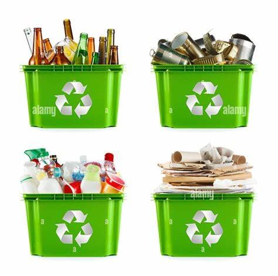
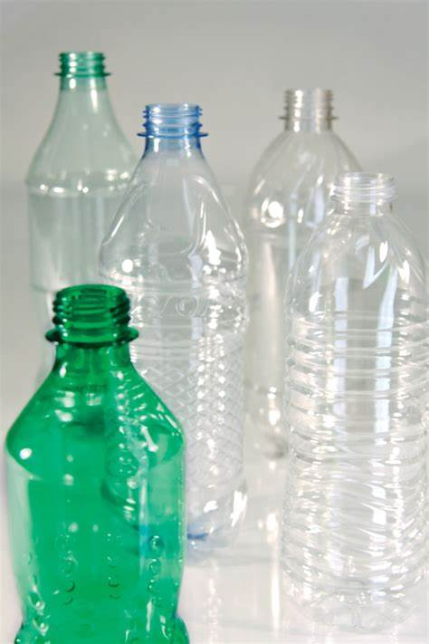
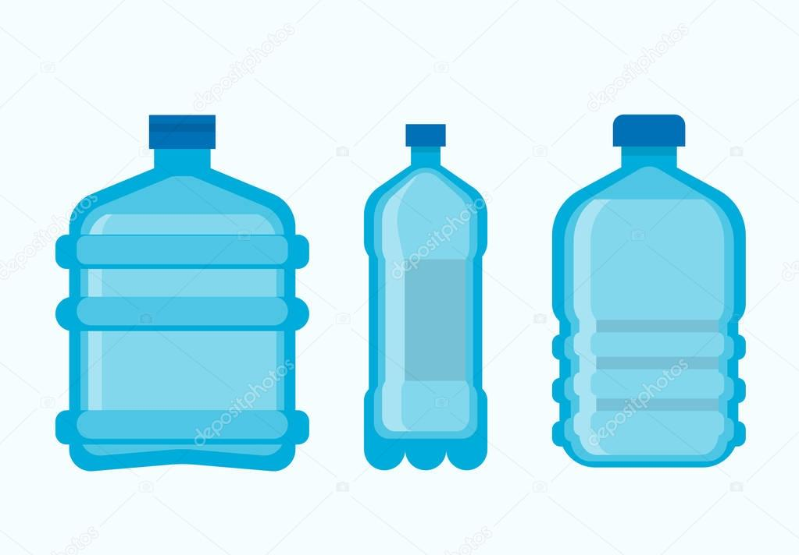
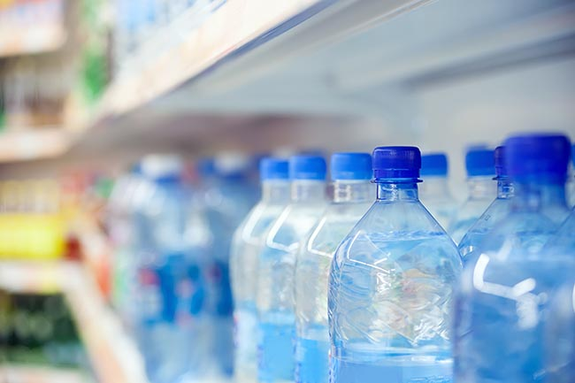
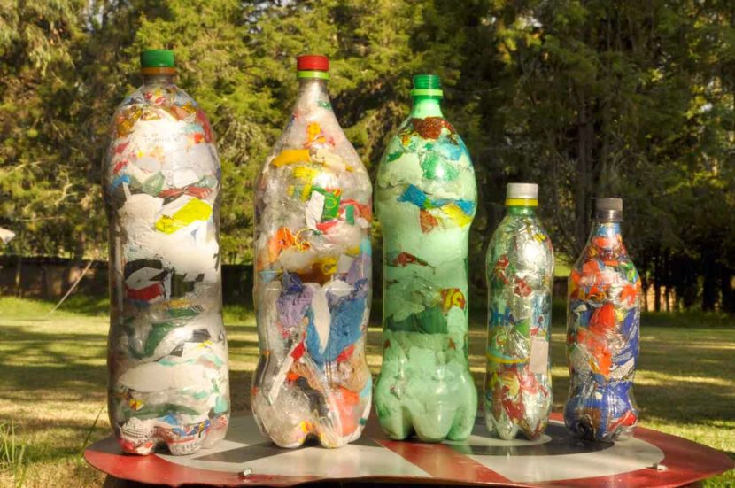
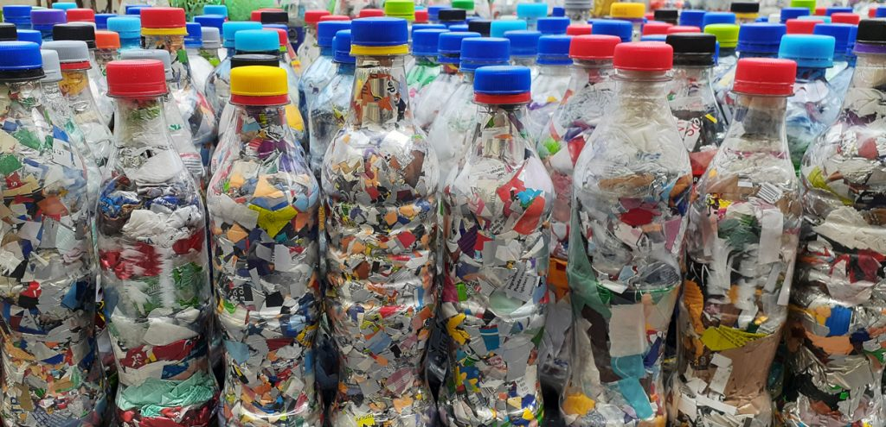
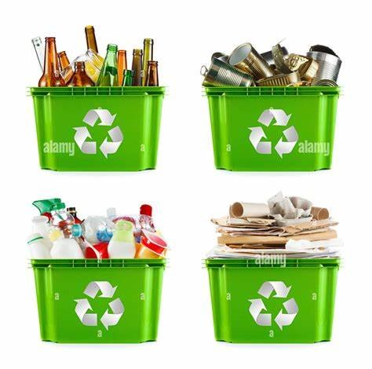
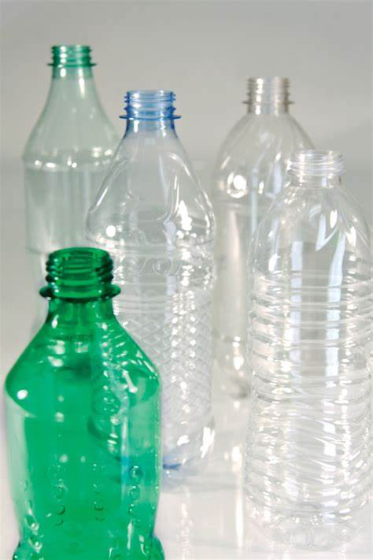
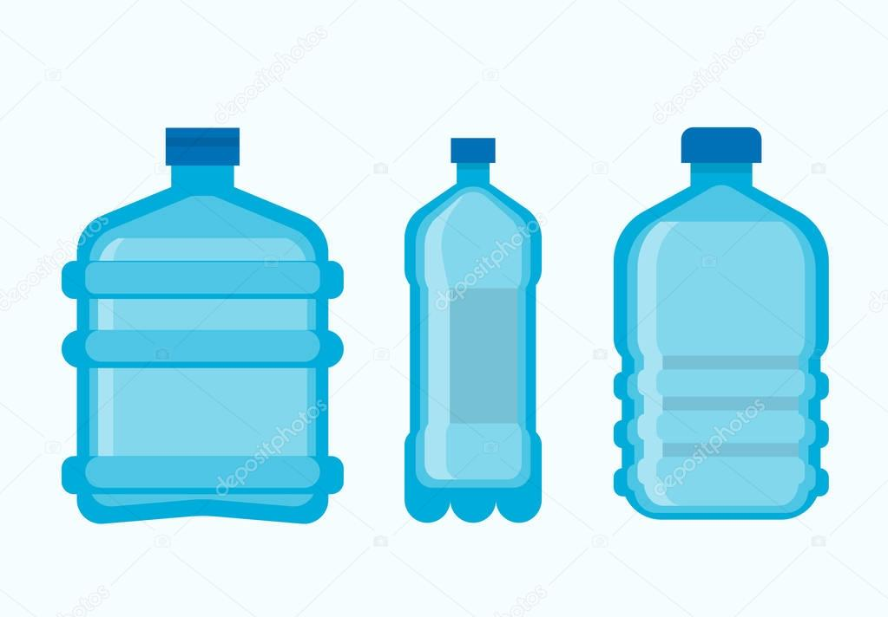
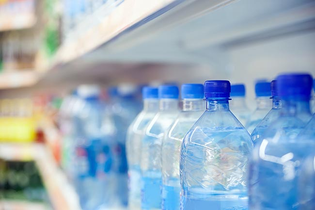

¿Que es Ecoplastic?
Ecoplastic es una solución para la contaminación y la polución. Esto con el fin de llevarlos a que conoscan una de las formas de contribuir al medio ambiente .
Los plásticos son elaborados con petroquímicos, estos químicos no encajan devuelta en la ecología que nos rodea.
El plástico no es biodegradable es fotodegradable, lo que significa que los plásticos dejados en la tierra o en el agua se irán rompiendo lentamente en pedazos más y más pequeños.
Eventualmente estos trozos se vuelven tan minúsculos que son absorbidos por las plantas, peces y animales que comemos.
Lo cual puede permitir que llegue a nosotros causando enfermedades de todo tipo, malformaciones, desbalances hormonales y hasta cáncer.
Actualmente existen vertederos con altísima tecnología.
Aun así, con el paso del tiempo ya sean 10 o 100 años estos químicos eventualmente irán a parar en la biosfera afectando tierras y familias.
¡EcoPlastic! Una solución a la contaminación plástica
Es por esto que el (ecoplastic) es una solución a la polución y contaminación el día de hoy, cuando se quema o arroja el plástico se envenena la tierra y el agua.
El proceso del ecoladrillo comienza al separar, lavar y guardar los plásticos en botellas Pet, gracias a este proceso se pueden hacer ladrillos que pueden ser reutilizados una y otra vez.
Es tipo de ladrillo consiste en una botella de plástico empacada a una densidad específica con elementos plásticos usados, limpios y secos para lograr que el bloque pueda utilizarse una y otra vez.
También pueden ser llenados con productos no reciclables y no biológicos que son tóxicos para el medio ambiente (polietileno, cables, baterías pequeñas, etc.)
Las botellas rellenas de plástico son utilizadas para fabricar muebles modulares, espacios de jardín, paredes e incluso edificios a gran escala.
Se han convertido en una forma emocionante en la cual las comunidades y las empresas pueden comenzar una transición inmediata del plástico hacia una forma armónica de ecología consciente de los ciclos de la tierra.
Su diseño permite aprovechar la longevidad y la durabilidad del plástico para crear un bloque de construcción indefinidamente reutilizable.
Indicaciones a tener en cuenta para empezar el proceso.
1 Seleccion del plástico

2 Disponibilidad

3 Volumen

4 Proyecto

Selección del plástico
Selecciona una marca o modelo especifico de botellas para cada proyecto, recuerda que cada compañía utiliza un modelo de botella para cada producto.
Esto hará que la construcción de tu proyecto sea mucho más fácil y contenga uniformidad.
Ten en cuenta que las botellas más pequeñas también funcionan sólo debes elegir Con qué modelo trabajar y comenzar tu proyecto.
Estos tres elementos te ayudarán a decidir qué tipo de botella utilizar.
Disponibilidad
No debes comprar bebidas para tener botellas disponibles, busca una botella que ya otros vallan a botar o desechar y asi poder utilizarla sin ningun valor economico.
Volumen
Elige el tamaño de la botella con el que desea rellenar su botella, las botellas de menos de 600 ML son más fáciles de llenar.
En cambio, las botellas de 1,5 Ltrs necesitarán mucho más plástico y también mucho tiempo, por lo que lo más recomendable es conseguir botellas de un litro.
4 Proyecto
Al rellenar las botellas siempre deben ser exactamente del mismo tamaño y de la misma forma.
ya que para proyectos de construcción al aire libre, uniformidad quizá no sea tan importante siempre y cuando el volumen sea constante.
Preparacion de los plasticos para rellenar la botella
Los plásticos que se utilizan deben estar hechos con plástico limpio y seco.
Si en el plástico se encuentra algo de comida aceite o suciedad asegúrate de lavarlo y luego secarlo.
Plástico sucio dentro de una botella dará lugar a un crecimiento microbiológico y a la formación de metano dentro del ladrillo.
Dado que comúnmente son utilizados para fabricar muebles para el hogar es importante usar plástico limpio.
Se han convertido en una forma emocionante en la cual las comunidades y las empresas pueden comenzar una transición inmediata del plástico hacia una forma armónica de ecología consciente de los ciclos de la tierra.
Su diseño permite aprovechar la longevidad y la durabilidad del plástico para crear un bloque de construcción indefinidamente reutilizable.
llenado de las botellas
Prueba a llenar las botellas con elementos no biodegradables solamente, como bolsas plásticas, plásticos y empaques de comida (polietileno), pajillas de plástico y empaques de todo tipo.
No se deben llenar las botellas con papeles, vidrios ni ningún tipo de metal.
Estos elementos son biodegradables y no envenenan la biosfera por lo que no es necesario colocar los dentro de una botella.
Se debe utilizar un palo para llenar las botellas con tanto plástico como sea posible.
Cómo se comienza empacando la parte inferior está se debe llenar con plásticos blandos para completar las esquinas.
Tips de llenado:
Al momento de empacar se usa el palo para empujar hacia abajo el plástico alrededor del interior de la botella; mueve los plásticos en círculos empujando hacia abajo y a los lados.
Recuerda cortar grandes plásticos en pedazos más pequeños, mientras más pequeños sean las piezas más densidad obtendrás.
Para darle un color a cada botella utiliza bolsas de color al principio.
En raros casos cuando se usa una varilla afilada, una botella delgada o demasiada fuerza la botella se puede romper.
En ese caso, se corta la botella y retira el plástico y comienza nuevamente las botellas rotas no durarán y pueden derramar plásticos.
Resultados

Podra observar como quedan las botellas despues del llenado con los plasticos

Con un poco de imaginación los ecoladrillos pueden utilizarse para casi cualquier cosa.
© 2022 Ecoplastic. Todos los derechos reservados |Diseñado por Johan Rincon
1 Seleccion del plástico
2 Disponibilidad
3 Volumen
4 Proyecto

Selección del plástico
Selecciona una marca o modelo especifico de botellas para cada proyecto, recuerda que cada compañía utiliza un modelo de botella para cada producto. Esto hará que la construcción de tu proyecto sea mucho más fácil y contenga uniformidad. Ten en cuenta que las botellas más pequeñas también funcionan sólo debes elegir Con qué modelo trabajar y comenzar tu proyecto. Estos tres elementos te ayudarán a decidir qué tipo de botella utilizar.
Disponibilidad
No debes comprar bebidas para tener botellas disponibles, busca una botella que ya otros vallan a botar o desechar y asi poder utilizarla sin ningun valor economico.
Volumen
Elige el tamaño de la botella con el que desea rellenar su botella, las botellas de menos de 600 ML son más fáciles de llenar. En cambio, las botellas de 1,5 Ltrs necesitarán mucho más plástico y también mucho tiempo, por lo que lo más recomendable es conseguir botellas de un litro.
4 Proyecto
Al rellenar las botellas siempre deben ser exactamente del mismo tamaño y de la misma forma. ya que para proyectos de construcción al aire libre, uniformidad quizá no sea tan importante siempre y cuando el volumen sea constante.Preparacion de los plasticos para rellenar la botella
Los plásticos que se utilizan deben estar hechos con plástico limpio y seco.
Si en el plástico se encuentra algo de comida aceite o suciedad asegúrate de lavarlo y luego secarlo.
Plástico sucio dentro de una botella dará lugar a un crecimiento microbiológico y a la formación de metano dentro del ladrillo.
Dado que comúnmente son utilizados para fabricar muebles para el hogar es importante usar plástico limpio.
Se han convertido en una forma emocionante en la cual las comunidades y las empresas pueden comenzar una transición inmediata del plástico hacia una forma armónica de ecología consciente de los ciclos de la tierra.
Su diseño permite aprovechar la longevidad y la durabilidad del plástico para crear un bloque de construcción indefinidamente reutilizable.
llenado de las botellas
Prueba a llenar las botellas con elementos no biodegradables solamente, como bolsas plásticas, plásticos y empaques de comida (polietileno), pajillas de plástico y empaques de todo tipo. No se deben llenar las botellas con papeles, vidrios ni ningún tipo de metal. Estos elementos son biodegradables y no envenenan la biosfera por lo que no es necesario colocar los dentro de una botella. Se debe utilizar un palo para llenar las botellas con tanto plástico como sea posible. Cómo se comienza empacando la parte inferior está se debe llenar con plásticos blandos para completar las esquinas.
Tips de llenado:
Resultados
Podra observar como quedan las botellas despues del llenado con los plasticos
Con un poco de imaginación los ecoladrillos pueden utilizarse para casi cualquier cosa.
© 2022 Ecoplastic. Todos los derechos reservados |Diseñado por Johan Rincon